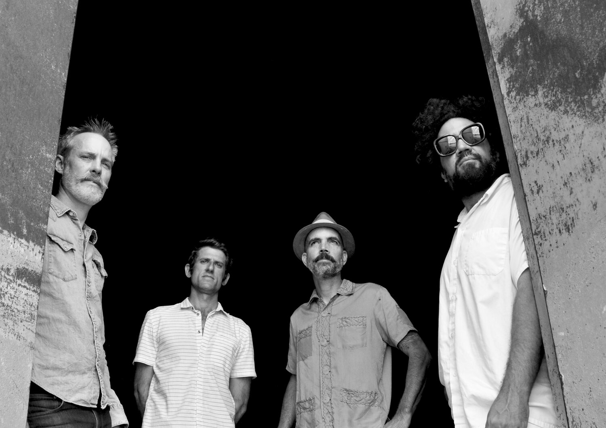

The Avocados seed was planted in 2013 on the fertile east side soil of Austin, TX by Greg Rhoades.
Greg is a seasoned Texas bassist, writer and performer with such bands as: Golden Dawn Arkestra,
Mudphonic and Starchild. His growing interest in playing guitar and a love of surf music led him to
form the band with his friend & neighbor, Ben Prentice (bass).
In 2017 Greg reached out to some long-time friends and musical compadres, John Branch (Hardproof,
Golden Dawn Arkestra, Spanish Gold) on organ/guitar and Alex Marrero (Brownout, Brown Sabbath,
Carrie Rodriguez) on drums. These two seasoned pro’s joined Greg and original bass player Ben
Prentice (Roxy Roca/Diagonals) to round out the band. The energy was exciting and the chemistry was
palpable. It has proven to be a potent, fan favorite line-up.
Their self-titled debut LP was recorded at Cacophony Studios and released by Found Object Records.
It includes their “hit song” “Guacamole”!
The Avocado’s perform regularly at clubs, festivals, weddings, pool parties and boats! They have a
long-standing summer residency, poolside at the famous Hotel San Jose in the heart of Austin’s
famous SOCO district.
In the fall of 2019 they began collaborating and arranging songs for a new LP. This time they
recorded and mixed at Buds Studio in East Austin. The guys tracked the album 100% live to analog
tape in 3 days, capturing the spirit of this unique and magical style of music; one which brings joy
to people of all ages and walks of life. It’s something you can see first hand at any Avocados show!
The new album, ¡Ensalada!, dropped November 13th, 2021. To celebrate this new release, Found Object
Records also re-pressed the out of print and highly acclaimed first Avocados LP!
